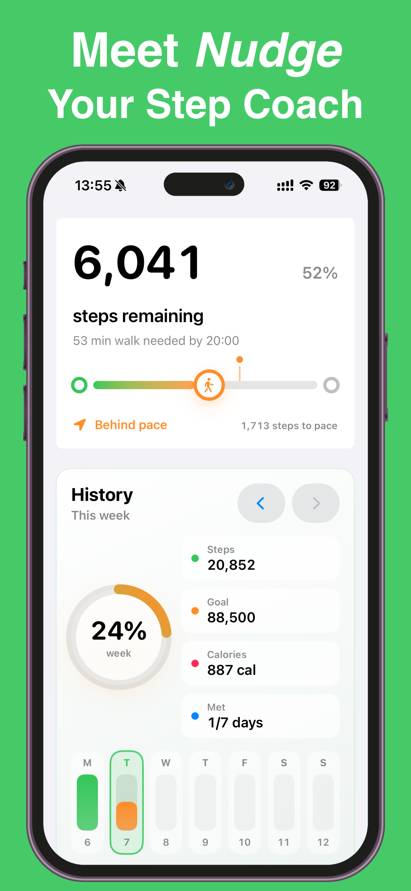
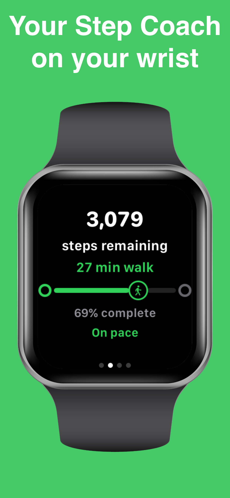
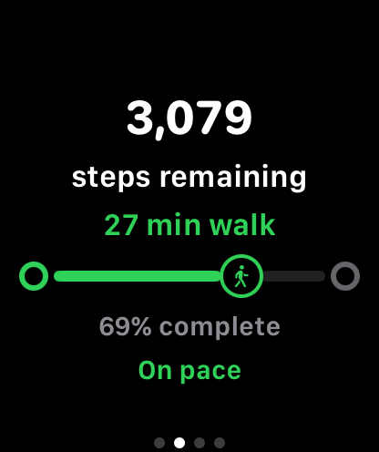
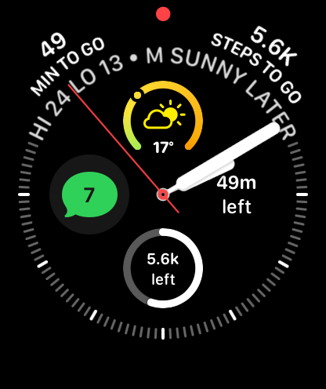
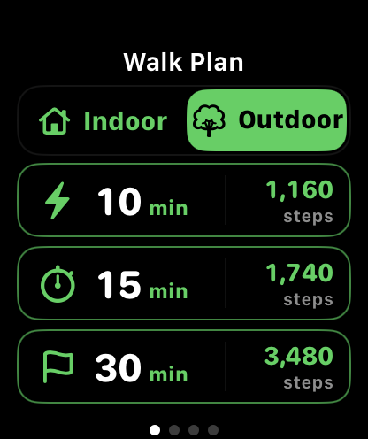
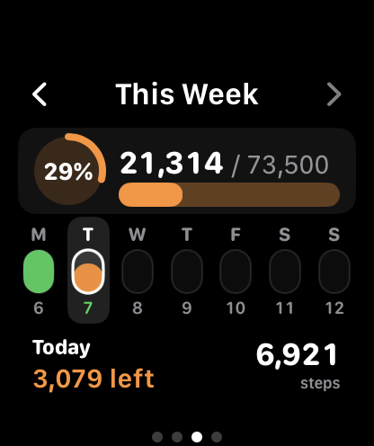

Apple Workouts
Records individual walks, runs, hikes, and workouts, including workout duration, heart rate, pace, route, and exercise data.
Nudge: Your Step Coach
Nudge is an Apple Watch step goal companion that turns your remaining steps into a simple countdown, walking-time estimate, and practical plan for the rest of your day.
Apple Workouts records your activity. Nudge helps you understand what’s left, when to move, and how much walking it may take to finish your daily goal.

Apple Watch step goal companion
A daily goal can feel abstract when all you see is a total step count. Nudge focuses on the information you can act on: how many steps remain, approximately how many walking minutes that represents, and whether you’re ahead, behind, or on pace to finish.
Set a daily step goal and choose a Finish By time. Nudge uses your Apple Health step data and walking pace to make the rest of your day easier to understand.
Designed for Apple Watch
Nudge was designed around quick, useful information on your wrist. Instead of searching through charts or complicated fitness metrics, you can open Nudge and immediately see what remains between you and your daily step goal.
Whether you have 800 steps or 8,000 steps remaining, Nudge helps translate the number into something practical. Check your progress, review a walk recommendation, or start a timed indoor or outdoor walking session directly from Apple Watch.





Walking reminders and recommendations
Nudge offers optional notifications designed to help you act before your daily goal gets out of reach.
Choose from multiple Daily Nudge times, progress updates, goal celebrations, and walk suggestions. Improved walk recommendations help translate your remaining steps into a practical walking duration.
You remain in control. Adjust your daily goal, Finish By time, walking pace, and notification options to match your schedule.
Nudge and Apple Workouts
Nudge does not replace Apple Workouts. Each app serves a different role in helping you stay active.
Records individual walks, runs, hikes, and workouts, including workout duration, heart rate, pace, route, and exercise data.
Helps you finish your overall daily step goal by showing remaining steps, estimated walking time, progress guidance, reminders, and practical walk recommendations.
Apple Health step tracking
With your permission, Nudge reads step count data from Apple Health. This allows the app to calculate daily progress, remaining steps, walking-time estimates, historical trends, and personalized recommendations.
Nudge does not replace Apple Health or create a separate step count. It uses the step data already collected by your iPhone and Apple Watch, then presents it as a clearer daily plan.
Compatibility
Nudge supports a broad range of Apple devices and adapts its layout across Apple Watch display sizes.
Compatible with supported iPhones running iOS 17 or later.
Compatible with supported Apple Watches running watchOS 10 or later.
Layouts are designed to support the full range of Apple Watch display sizes.
The Nudge philosophy
A healthier routine does not require every day to include a perfect workout. Small amounts of movement, repeated consistently, can become a lasting habit.
Nudge helps make that habit visible. It gives you a clear next step rather than asking you to exercise harder, train longer, or chase complicated fitness metrics.
Frequently asked questions
Nudge is an Apple Watch and iPhone step goal companion. It turns your remaining daily steps into a clear countdown, walking-time estimate, and practical plan.
Nudge uses step data collected through Apple Health rather than creating a separate step count. It then helps you understand your progress, remaining steps, and estimated walking time.
No. Apple Workouts records individual walks, runs, hikes, and workouts. Nudge complements it by helping you finish your overall daily step goal.
Yes. With your permission, Nudge reads step data from Apple Health to calculate daily progress, remaining steps, walking-time estimates, and coaching guidance.
Yes. You can choose a daily goal of 10,000 steps or set another target that better fits your routine. Nudge shows how many steps and walking minutes remain.
Yes. Nudge includes optional Daily Nudges, progress reminders, walk recommendations, and goal celebrations. You can adjust the available options to fit your day.
Yes. Nudge includes Apple Watch complications that make your daily step progress and remaining steps visible from supported watch faces.
Nudge supports compatible iPhones running iOS 17 or later and compatible Apple Watches running watchOS 10 or later.
Nudge is focused on step progress and daily walking guidance. For more information about how the app handles data, review the Nudge Privacy Policy.
Nudge displays step data made available through Apple Health. Results can vary based on which Apple devices you carry or wear, how Apple Health combines data sources, and when step information is refreshed.
One walk at a time
Download Nudge and turn your remaining steps into a simple, achievable walking plan.